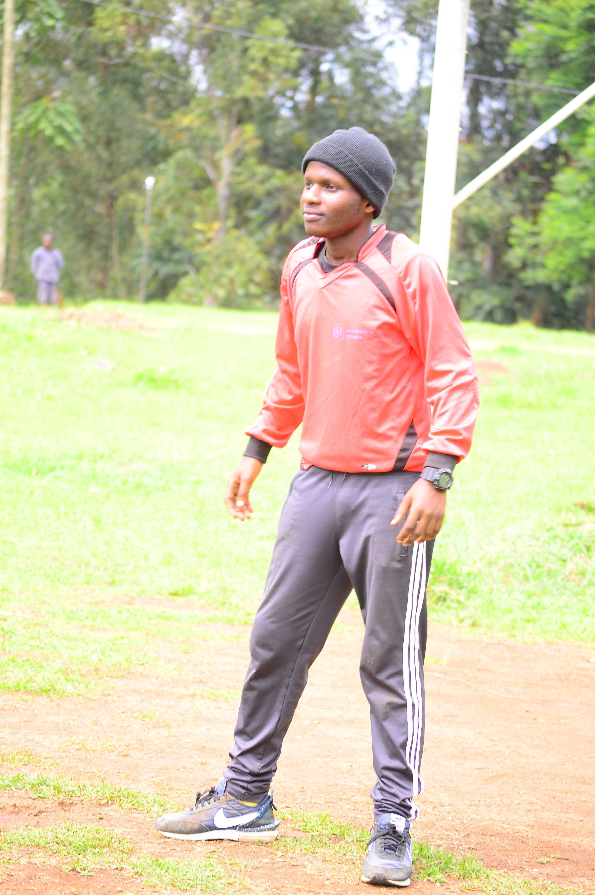

Who is
Derrick Nuby ?
Get To Know
*My Life Story*My Hobbies*What I Am Working On
*My Education*My Other Skills*And Much More

My Life Story
I first saw a computer in 2014, but before that i was someone who always dissassembeled things. someone who always had interest in some mechanical devices. And in 2017 i had become one of the best computer repair guy in my school, that didn't end there.. i continued to increase my skills and in 2018 i was introduced to webdevelopment ever since that day i have loved and lived my webdevelopment career. and now here i am with over 40 projects still learning the backend.
My Hobbies

I first saw a computer in 2014, but before that i was someone who always dissassembeled things. someone who always had interest in some mechanical devices. And in 2017 i had become one of the best computer repair guy in my school, that didn't end there.. i continued to increase my skills and in 2018 i was introduced to webdevelopment ever since that day i have loved and lived my webdevelopment career. and now here i am with over 40 projects still learning the backend.
What I Am Working On
I first saw a computer in 2014, but before that i was someone who always dissassembeled things. someone who always had interest in some mechanical devices. And in 2017 i had become one of the best computer repair guy in my school, that didn't end there.. i continued to increase my skills and in 2018 i was introduced to webdevelopment ever since that day i have loved and lived my webdevelopment career. and now here i am with over 40 projects still learning the backend.
My Other Skills
I first saw a computer in 2014, but before that i was someone who always dissassembeled things. someone who always had interest in some mechanical devices. And in 2017 i had become one of the best computer repair guy in my school, that didn't end there.. i continued to increase my skills and in 2018 i was introduced to webdevelopment ever since that day i have loved and lived my webdevelopment career. and now here i am with over 40 projects still learning the backend.
My Education
I first saw a computer in 2014, but before that i was someone who always dissassembeled things. someone who always had interest in some mechanical devices. And in 2017 i had become one of the best computer repair guy in my school, that didn't end there.. i continued to increase my skills and in 2018 i was introduced to webdevelopment ever since that day i have loved and lived my webdevelopment career. and now here i am with over 40 projects still learning the backend.
Other Things You Might Know
I first saw a computer in 2014, but before that i was someone who always dissassembeled things. someone who always had interest in some mechanical devices. And in 2017 i had become one of the best computer repair guy in my school, that didn't end there.. i continued to increase my skills and in 2018 i was introduced to webdevelopment ever since that day i have loved and lived my webdevelopment career. and now here i am with over 40 projects still learning the backend.